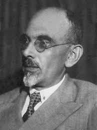

თეთრი საყელო
ინფორმაცია წიგნზე
ავტორი: მიხეილ ჯავახიშვილი
ჟანრი: რომანი, კლასიკა
გამოშვების თარიღი: 1926 წელი
აღწერა:
მიხეილ ჯავახიშვილის ,,თეთრი საყელო'' ერთ-ერთი გამორჩეული რომანია ყველა დროის ქართულ ლიტერატურაში. მწერალმა მხატვრული გზით შეძლო გადმოეცა რთული ფსიქოლოგიური, ფილოსოფიური თუ კულტურული განსხვავებები და პრობლემები ,,დედა-ქალაქსა“ და ჯურხაანთკარს შორის. ერთი შეხედვით ტფილისი, როგორც ცივილიზაციის სიმბოლო, ხოლო მეორე მხრივ, გარე სამყაროს მოწყვეტილიშუასაუკუნეებისთვის დამახასიათებელი ხევსურული წეს-ჩვეულებებითა და ღირებულებებით განმსჭვალული სოფელი. რომანის ერთ-ერთი გმირის აზრით, მათი გადამალვა განაპირობა ,,წითელმა ეშმამ“, რომელმაც უკვე სახე უცვალა ბარს და მთაში მყოფთაც ემუქრებოდა. ასე რომ, გადამალვა და მიკარგული სოფლის დაარსება, რომლის მდებარეოაბა არავინ არ იცის, შესაძლოა ხევსურთა გაქცევად ჩავთვალოთ. იმდროისთვის ბაგრატიონების მიერ მიტოვებულ უბატონო ხალხს არ სურდა რევოლუციის, მილიციისა და ,,სამართლის“ მსხვერპლი გამხდარიყო. მათი აზრით, ,,ეშმამ“ ხალხს ქართული დაავიწყა და დააბინძურა. ამ იდეას ხევსური ჯურხა ზუსტად გამოხატავს შემდეგი სიტყვებით: ,,ჩვენ ჭუჭყი ზედ გვაცხია, ხოლო ქალაქელებს შიგნითო.“
მიხეილ ჯავახიშვილი ( სხვა გვარი: ადამაშვილი, ადამაშვილი) (დ. 8 ნოემბერი, 1880 – გ. 30 სექტემბერი, 1937) იყო ქართველი მწერალი, რომელიც ითვლება მეოცე საუკუნის ერთ-ერთ საუკეთესო ქართველ მწერალად. მისი პირველი მოთხრობა გამოჩნდა 1903 წელს, მაგრამ შემდეგ მწერალი გრძელვადიან პაუზაში ჩავარდა, სანამ წერას დაუბრუნდა 1920-იანი წლების დასაწყისში. საბჭოთა იდეოლოგიური ზეწოლისადმი მისმა წინააღმდეგობამ მას სიცოცხლე დაუჯდა: ის სიკვდილით დასაჯეს იოსებ სტალინის დიდი წმენდის დროს და მისი ნაწერები აკრძალული იყო თითქმის ოცი წლით. რუსული და ქართული ლიტერატურის თანამედროვე ბრიტანელი მკვლევარის, დონალდ რეიფილდის სიტყვებით, „მისი ნათელი მოთხრობა, პირდაპირ მედიაში, მისი მხიარული იუმორი, დახვეწილი ირონია და ზნეობრივი გამბედაობა იმსახურებს შედარებას სტენდალის, გი დე მოპასანის ისტორიებთან. და ემილ ზოლა თანამედროვე ქართულ პროზაში მხოლოდ კონსტანტინე გამსახურდიას შეეძლო მიისწრაფვოდა იმავე საერთაშორისო დონეზე“.
ავტორის ხელმოწერა: